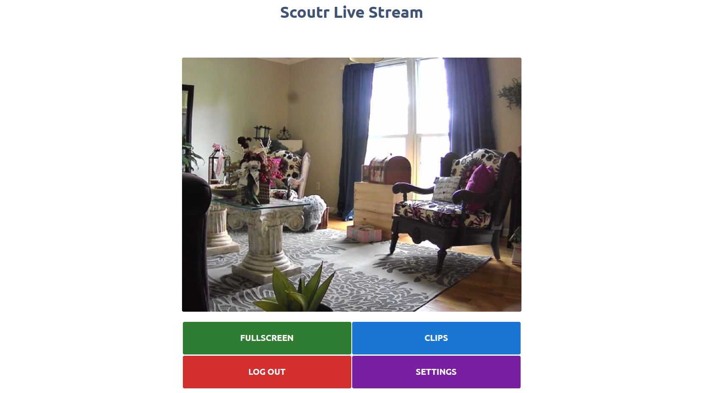
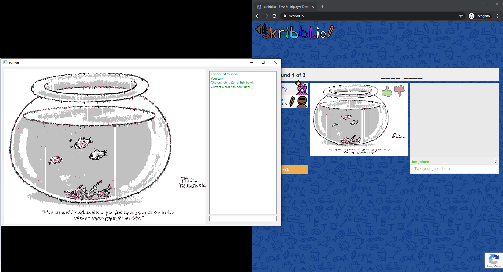

Portfolio
Scoutr
Scoutr is a lightweight python webserver that can turn any USB camera into a 24/7 security and surveillance camera.
CCCalc

CCCalc is an iOS modification that allows a small calculator to be used on top of any screen, anywhere in the OS. Written in Objective-C for use with Jailbroken devices.
Skribbl.io-Client
Skribbl.io-Client is a desktop client written in python that interfaces with the online game Skribbl.io, allowing the game to be played outside of a browser.